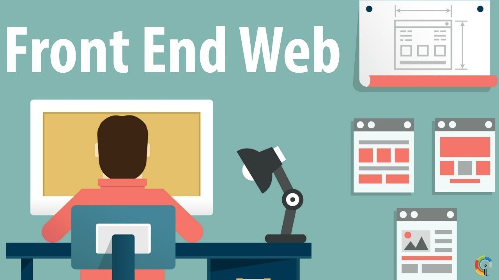
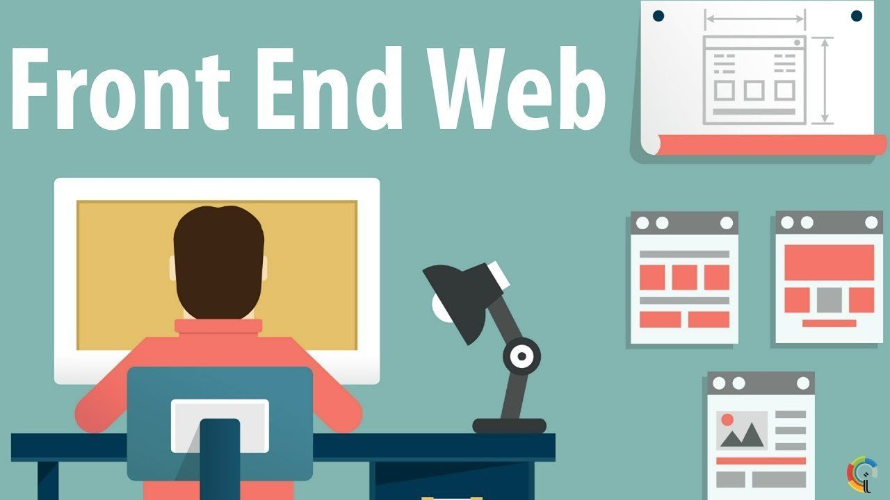

Front-End
Именно благодоря HTML CSS and JavaScript можно получить стилизованный, интерактивный сайт. HTML - язк разметки предназначен для размещения контента на сайт. CSS стилизует этот контент, JS - делает сайт интерактивным и отзывчивым к пользователю
 
